Swarm上でセルオートマトン(CA)を用い、チューリングの形態形成のモデルをシミュレートした。CAのルールはKuschらのもの[1]を採用し、同様の結果を得た。ここでは使ったCAのルール及びパラメータ、形態形成のシミュレーションにCAを使うことの意義についてレポートする。モデルの詳述や結果の解析は行わない。
チューリングは、モルフォゲンという化学物質の反応と拡散によって生物の形態形成が説明できるとし、次のようなモデルを提案した。
モルフォゲンXとYがあって、それぞれ活性化と阻害の働きをする。そしてX,Yは次のような反応・拡散方程式で支配される。
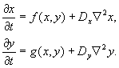
ここで、x,yはそれぞれX,Yの濃度、f,gはX,Yの生成率、Dは拡散係数である。このモデルは1990年に現実にボルドー大学のグループの実験によって存在する現象として検証されたという。（[2],P.146）
チューリングモデルをシミュレートするには、上の微分方程式を数値的に解くほかに、CAを使う方法がある。Kuschらは反応・拡散を以下のようなCAのルールとして記述し、チューリングモデルをシミュレートした。
ここで示すのは貝殻の模様のようなものを再現することを意識した1次元CAである。各セルは2つの変数u(t),v(t)を持ち、それぞれ活性化物質(activator)と阻害物質(inhibitor)の量を表す（tは時間。）u(t)は0または1のいずれかで、0が不活性状態（白）、1が活性化状態（黒）を表す。u(t),v(t)はそれぞれ2つの中間状態を経てu(t+1),v(t+1)に遷移する。そのルールは以下のとおり。
(i) If v(t)>=1, then v1=[v(t)(1-d)-e],
else v1=0
(ii) If u(t)=0, then u1=1 with prob. p, u1=0 with prob. (1-p)（後半は論文に書いてないが）
else u1=u
(iii) If u1=1, then v2=v1+w1,
else v2=v1
(iv) If u1=0 and nu>{m0+m1 v2}, then u2=1,
else u2=u1
(v) v(t+1)={<v2>}
(vi) If v(t+1)>=w2, then u(t+1)=0,
else u(t+1)=u2
ここで{}は最も近い整数を、<>は距離rv以内での平均、nuは距離ru以内の活性化セルの数を表す。
(i)は時間ステップあたりの阻害物質の減少を記述する。特にd=1,e=1の場合は線形減少で、0<d<1でe=0の場合は指数減少である。(ii)によって不活性のセルはある確率で活性化する。(iii)は活性化しているセルが阻害物質を出すことを表している。(iv)で距離ru以内にある活性化セルが、阻害物質のある線形関数より多ければ活性化する。これは活性化物質の拡散である。(v)は阻害物質が距離rv以内の平均になること、つまり阻害物質の拡散を表す。(vi)は阻害物質がある値より多いと、セルは不活性になることを表している。
1次元のセル・オートマタだが、時間変化をみるためにPatternSpace (Discrete2d)に描画する。
Swarmの使用例を示すために、各Cellをオブジェクトにしてある。ただし、これにより実行速度は非常に遅くなっている。あまり高速でない計算機を使っている場合、実装方法を変更したほうがいいだろう。
ModelSwarmのスケジュールには、各Cellのstep1からstep6までを並べてあり、step?の中で他のCellの値が必要になったときは、PatternSpaceに問い合わせればわかるようになっている。
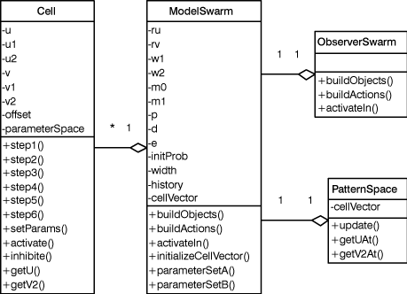
モデルの各パラメータはModelSwarmが保持しており、この値は、Turing.scmやProbeを使って変更することができる。Probeに値を入れた場合はEnterキーでセットし、メソッドinitializeCellVectorを呼び出すこと。
サンプルとして、結果に示すパラメータ・セットに設定するためのメソッドparameterSetAからparameterSetKまでを実装し、Probeに登録してある。
結果とそれを与えるパラメータを以下に示す。[1]とは少し異なるパラメータを使っているものもある。特に明示していなければd=0.0; e=1.0; initProb=0;
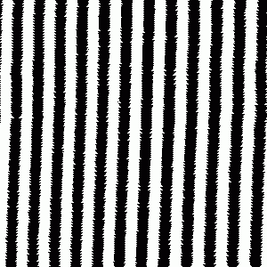
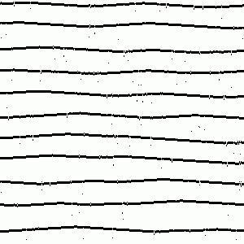
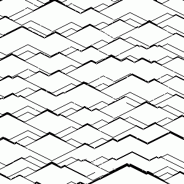
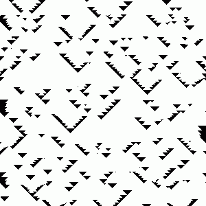
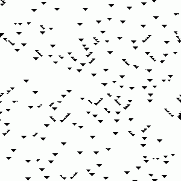
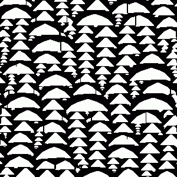
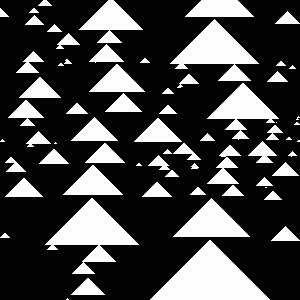
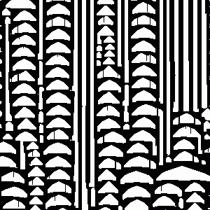
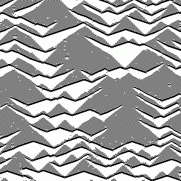
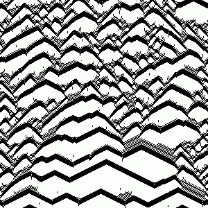
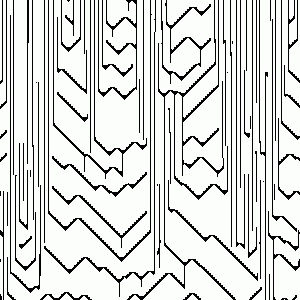
微分方程式モデルでは再現できないが、CAモデルではできるものがある。縞模様の分岐や中断はその例である。さらに重要なのはCAモデルではラングトンの分類でいうクラス4（複雑・非決定、周期的とカオス的の間）を再現できることである。Kuschらの結果はその最初の例で、先に示した結果のeとh～kがクラス4である。2つのパターンが混ざり合っているようなでも、1つのルールで再現できるのである。
逆に線の交差など、微分方程式モデルでは再現できて、CAモデルではできないものもある。しかしそれらは場所によって異なるパラメータを導入することで解決できるかもしれない。
そもそも形態形成は細胞の集合という不連続性をもった場で起こることであるから、微分方程式モデルのような連続モデルよりもCAのような不連続モデルのほうが自然をうまく再現できるかもしれない。
[1] I. Kusch and M. Markus, J. theor. Biol., 178, 333-340 (1996)
[2] 加藤恭義ほか『セルオートマトン法』（森北出版,1998）
これは単なる1次元セル・オートマタであるから、とくにSwarmの強さが発揮されるわけではない。あくまで、Swarmの使い方を説明するための例である。たとえばMathematicaで同様の結果を簡単に再現することができる。このように